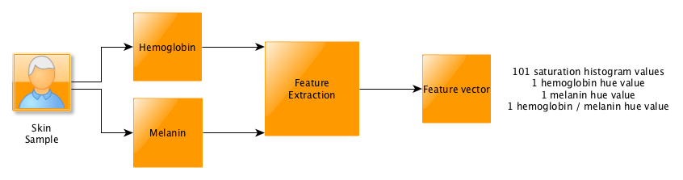
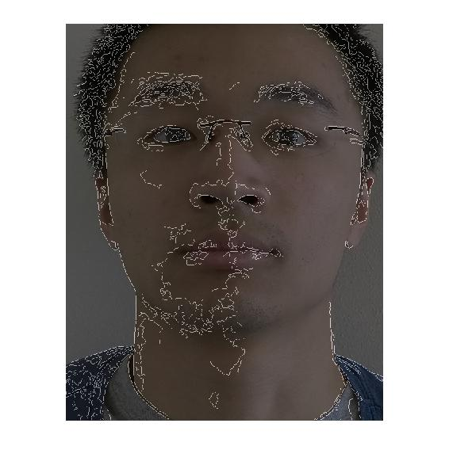

Skin attribute recognition
This skin attribute recognition project was accomplished when I worked as a data scientist in Quantified Skin. The neural network and self organizing map algorithm utilized the user sensor image to differentiate age, gender and sebum level of user skin.
The image analysis team applies our patented feature extraction algorithm to extract all the necessary feature vectors from our user sensor image.
Figure 1 - Feature vector extraction process 
My role is to develop and improve skin pattern classification algorithm by neural network, self organizing map, feature scaling and feature selection to help our user to answer their behavioral question based on their lifestyle so they can make better decision on how to improve their skin health.
I utilized hemoglobin and melanin feature vector to differentiate various sebum level. Pore and wrinkle feature vectors were used to recognize different ages of users, as shown below.
In addition, I also evaluated the relationship between cross-validation and training error with different architectural structures of neural network and regularization terms in order to improve our training and testing accuracy up to 70%.
Figure 2 - Skin attribute classification process (My role)
Figure 3 - Gender Feature Vector Image
Figure 4 - Hemoglobin Feature Vector Image
Figure 5 - Melanin Feature Vector Image
Figure 6 - Pore Feature Vector Image
Figure 7 - Wrinkle Feature Vector Image

For more technical details, you can get in touch with me by my eamil.